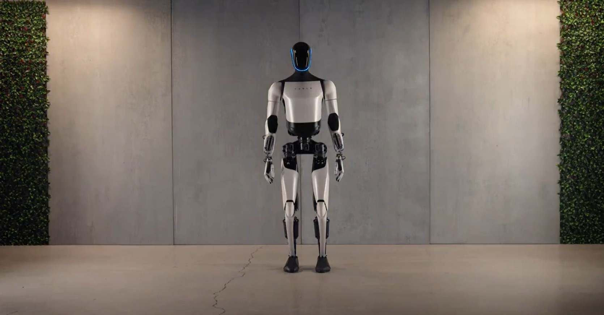
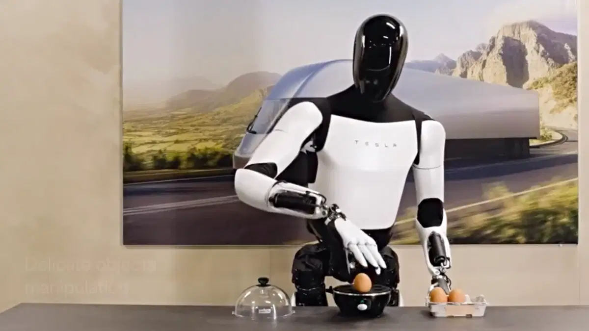

Beneficios que aporta el uso de Optimus Robot
- Automatización de tareas domésticas
- Optimus es capaz de encargarse de las tareas cotidianas como: limpiar, regar plantas, pasear a los perros, cocinar o hacer la compra, liberando así más tiempo a los usuarios.
- Asistencia personalizada
- Tiene la posibilidad de actuar como un asistente personal, sirviendo bebidas, cuidando niños o ayudando con las actividades rutinarias, proporcionando apoyo tanto en el hogar como en entornos laborales
- Aumento de la productividad en entornos industriales
- Optimus puede ser utilizado para movilizar objetos pesados en almacenes o líneas de producción, optimizando así la eficiencia y reduciendo la necesidad de mano de obra humana para tareas físicas repetitivas.
- Reducción de costos laborales
- Al automatizar una gran variedad de trabajos, Optimus tiene la posibilidad de reducir costos operativos en varias industrias, mejorando así el beneficio de estas.
- Accesibilidad económica
- Su precio rondará entre los 20.000,00€ y los 30.000,00€ , Optimus Robot podría ser una solución asequible tanto para usuarios individuales como para empresas, facilitando la adopción de robots en un espectro amplio de aplicaciones.
Breve historia de los robots humanoides y su evolución
La historia de los robots humanoides ha sido un proceso gradual de avances tecnológicos. En sus inicios, hacia la década de 1940, la robótica se inspiró en la naturaleza, como las tortugas robóticas de William Grey Walter, que interactuaban con su entorno. Sin embargo, no fue hasta los años 90 cuando se comenzaron a desarrollar robots más avanzados, capaces de interactuar con los humanos de manera más natural.
Uno de los hitos más importantes fue Kismet, creado por Cynthia Breazeal en el MIT. Este humanoide podía reconocer y simular emociones, marcando el inicio de la robótica afectiva. Al mismo tiempo, en Japón, Honda desarrollaba robots humanoides como ASIMO, que no solo podía moverse con agilidad, sino también interactuar reconociendo gestos y voces.
En 2006, llegó NAO, un pequeño robot que se utilizó en entornos educativos y asistenciales. Este tipo de robots, más accesibles y adaptables, mostraron cómo los humanoides podían ayudar a mejorar la interacción con personas, especialmente en el ámbito de la salud y la educación.
Hoy en día, los robots humanoides han avanzado enormemente, siendo capaces de reconocer y expresar emociones, facilitando la asistencia a personas mayores o con necesidades especiales. La evolución de estos robots sigue en constante desarrollo, con el objetivo de integrarse cada vez más en la vida cotidiana. El 11 de octubre de 2024, Elon Musk sorprendió a todos los asistentes de su evento, con varios Optimus robots capaces de realizar tareas como cocinar, limpiar e interactuar con personas, entre otras acciones.
Información adicional sobre los humanoides
Si deseas conocer mas información acerca de los humanoides, simplemente clica aqui para acceder a dicha información